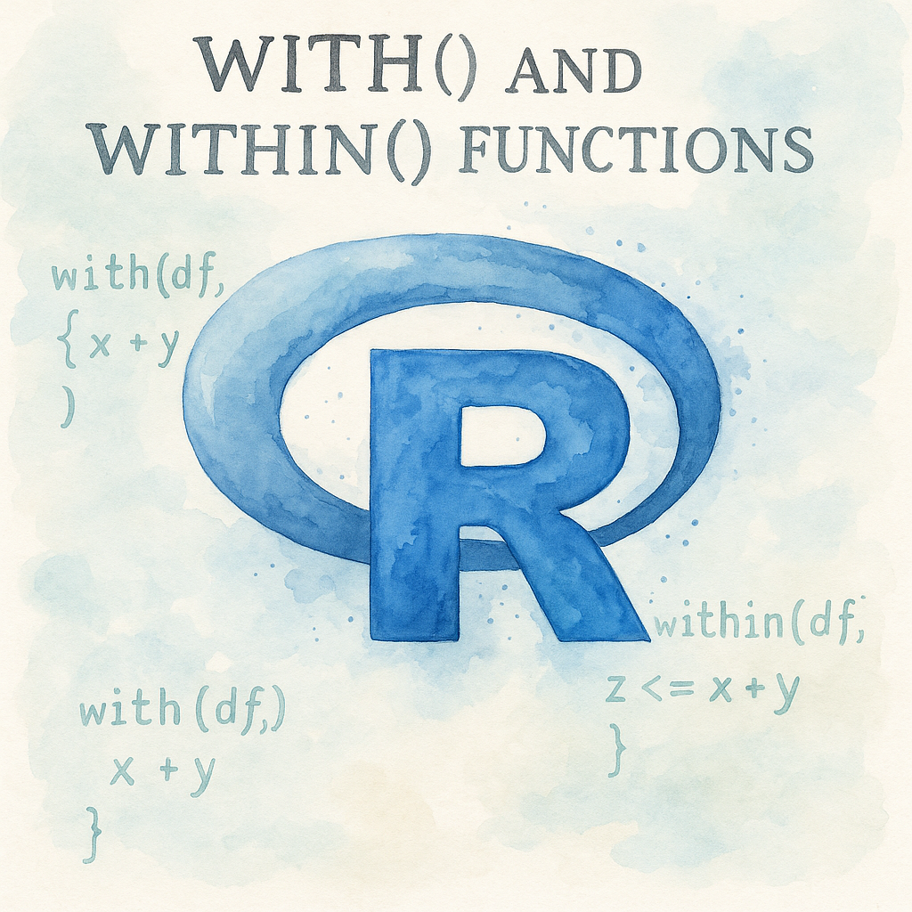

# Create sample data
df <- data.frame(
x = c(1, 2, 3, 4),
y = c(10, 20, 30, 40)
)Introduction
Ever find yourself typing df$column over and over again in your R code? Or struggling with repetitive data frame references that make your scripts look cluttered? You’re not alone! R’s with() and within() functions are here to save the day, making your data manipulation code cleaner and more readable.
These two base R functions might seem similar at first glance, but they serve different purposes in your data analysis workflow. The with() function lets you evaluate expressions using data frame columns directly, while within() helps you modify data frames without all the repetitive typing. In this guide, we’ll explore how to use both functions effectively, complete with practical examples and tips to avoid common pitfalls.
Let’s dive in!
Understanding the with() Function
What Does with() Do?
The with() function creates a temporary environment where you can reference data frame columns directly by name. Think of it as telling R: “Hey, work with this data frame for a moment, and let me use the column names without the $ symbol.”
Basic Syntax of with()
with(data, expression)Where:
data: Your data frame or listexpression: The R code you want to run using the columns
Simple Examples of with()
Let’s start with a basic data frame:
Example 1: Calculate the mean
# Without with()
mean_x_base <- mean(df$x)
# With with()
mean_x_with <- with(df, mean(x))
# Result: 2.5
cat("Mean of x:", mean_x_base, "\n")Mean of x: 2.5 cat("Mean of x:", mean_x_with, "\n")Mean of x: 2.5 # Check if the results are identical
cat("Are results identical: ", identical(mean_x_with, mean(df$x))) # TRUEAre results identical: TRUEExample 2: Perform calculations using multiple columns
# Without with()
result_base <- df$x + df$y
# With with()
result_with <- with(df, x + y)
# Result: c(11, 22, 33, 44)
# Print results
cat("Result without with():", result_base, "\n")Result without with(): 11 22 33 44 cat("Result with with():", result_with, "\n")Result with with(): 11 22 33 44 # Check if the results are identical
cat("Are results identical: ", identical(result_with, df$x + df$y)) # TRUEAre results identical: TRUEExample 3: Statistical tests made easy
# Run a t-test between two columns
test_result <- with(df, t.test(x, y))
print(test_result)
Welch Two Sample t-test
data: x and y
t = -3.4684, df = 3.06, p-value = 0.03917
alternative hypothesis: true difference in means is not equal to 0
95 percent confidence interval:
-42.917954 -2.082046
sample estimates:
mean of x mean of y
2.5 25.0 Understanding the within() Function
What Does within() Do?
While with() evaluates expressions, within() goes a step further—it modifies your data frame and returns a new version with your changes . It’s perfect for creating new columns or updating existing ones.
Basic Syntax of within()
within(data, {
# Your modification expressions
})The curly braces {} let you write multiple modifications in a clean, organized way.
Practical Examples of within()
Example 1: Create a new column
df2 <- within(df, {
z <- x * y
})
df2 x y z
1 1 10 10
2 2 20 40
3 3 30 90
4 4 40 160# df2 now has columns x, y, and zExample 2: Modify existing columns
df3 <- within(df, {
x <- x + 10
y <- y / 2
})
# x values increased by 10, y values halved
df3 x y
1 11 5
2 12 10
3 13 15
4 14 20Example 3: Remove a column
df4 <- within(df, {
x <- NULL
})
# df4 only has the y column
df4 y
1 10
2 20
3 30
4 40Key Differences Between with() and within()
Understanding when to use each function is crucial for effective R programming:
| Feature | with() | within() |
|---|---|---|
| Purpose | Evaluate expressions | Modify data frames |
| Returns | Result of expression | Modified data frame |
| Modifies original? | No | No (returns copy) |
| Best for | Calculations, summaries | Adding/updating columns |
Key Takeaway: Use with() when you want to calculate something FROM your data. Use within() when you want to change something IN your data.
Common Mistakes to Avoid
1. Expecting with() to Modify Data
Wrong:
with(df, new_col <- x + y) # This doesn't add a column!Right:
df <- within(df, new_col <- x + y) # This adds the column2. Forgetting to Assign within() Results
Wrong:
within(df, z <- x * y) # Changes are lost!Right:
df <- within(df, z <- x * y) # Changes are saved3. Variable Name Conflicts
If you have variables in your global environment with the same names as your data frame columns, with() and within() will use the data frame columns first. This can lead to unexpected results!
Best Practices for Clean Code
1. Choose the Right Function
- Use with() for:
- Statistical calculations
- Temporary computations
- When you don’t need to modify the data
- Use within() for:
- Creating new columns
- Updating existing columns
- Data transformation tasks
2. Keep It Readable
# Good: Clear and organized
df_clean <- within(df, {
# Calculate age groups
age_group <- ifelse(age < 30, "Young", "Adult")
# Standardize income
income_scaled <- (income - mean(income)) / sd(income)
# Remove temporary column
temp_col <- NULL
})3. Document Your Intent
Always add comments explaining why you’re using with() or within(), especially in complex scripts.
Comparing with Alternative Approaches
While with() and within() are useful, R offers other approaches too:
Traditional $ Operator
# Simple but repetitive
df$new_col <- df$x * df$y
mean_x <- mean(df$x)Modern dplyr Approach
library(dplyr)
# More readable for complex operations
df <- df %>%
mutate(new_col = x * y)When to Use What?
- with()/within(): Great for base R scripts, simple operations
- $ operator: Quick one-off operations
- dplyr: Complex data pipelines, modern R workflows
Your Turn!
Let’s practice using both functions. Try solving this problem:
Challenge: You have a data frame with student scores:
students <- data.frame(
name = c("Alice", "Bob", "Charlie"),
math = c(85, 90, 78),
english = c(92, 88, 85)
)Tasks:
- Use with() to calculate the average math score
- Use within() to add a “total” column (math + english)
- Use within() to add a “grade” column: “A” if total >= 170, “B” otherwise
Try it yourself before checking the solution!
Click here for Solution!
# Task 1: Average math score with with()
avg_math <- with(students, mean(math))
# Result: 84.33333
# Task 2: Add total column with within()
students <- within(students, {
total <- math + english
})
# Task 3: Add grade column with within()
students <- within(students, {
grade <- ifelse(total >= 170, "A", "B")
})
# Final result:
# name math english total grade
# 1 Alice 85 92 177 A
# 2 Bob 90 88 178 A
# 3 Charlie 78 85 163 B
print(students) name math english total grade
1 Alice 85 92 177 A
2 Bob 90 88 178 A
3 Charlie 78 85 163 BQuick Takeaways
- with() evaluates expressions using data frame columns without modifying the data
- within() modifies data frames and returns a new copy with changes
- Always assign within() results back to save changes
- Use with() for calculations, within() for modifications
- Both functions help reduce repetitive
df$columntyping - They work with data frames and lists, not other object types
- Consider modern alternatives like dplyr for complex workflows
Conclusion
The with() and within() functions are powerful tools in your R programming toolkit. They make your code cleaner, more readable, and less error-prone by eliminating repetitive data frame references. While with() excels at calculations and temporary operations, within() shines when you need to transform your data.
Remember the golden rule: with() for reading, within() for writing. Master these functions, and you’ll write more elegant R code that’s easier to maintain and understand.
Ready to clean up your R scripts? Start by identifying places where you use df$column repeatedly, and try replacing them with with() or within(). Your future self (and your colleagues) will thank you!
FAQs
Q1: Can I use with() and within() with lists? A: Yes! Both functions work with lists as well as data frames. They create environments from the list elements, allowing you to reference them directly.
Q2: Do these functions work with tibbles from the tidyverse? A: Yes, tibbles are enhanced data frames, so with() and within() work perfectly with them.
Q3: Is there a performance difference between using with() and the $ operator? A: For single operations, the performance difference is negligible. However, with() can be slightly more efficient when performing multiple operations on the same data frame.
Q4: Can I nest with() and within() functions? A: While technically possible, nesting these functions can make code hard to read. It’s better to use them separately or consider alternative approaches for complex operations.
Q5: How do I access documentation for these functions in R? A: Simply type ?with or ?within in your R console to access the official documentation , .
References
R Documentation - with() Function. RDocumentation. Base R Package Version 3.6.2.
R Base Functions Guide. Spark By Examples. R Programming Tutorials.
DataCamp Documentation - with() and by() Functions. DataCamp. R Documentation.
Simplify Your Code with R’s Powerful Functions: with() and within(). R-bloggers. July 2023.
R with() and within() Functions: A Complete Guide. Statology. R Programming Tutorials.
Happy Coding! 🚀

You can connect with me at any one of the below:
Telegram Channel here: https://t.me/steveondata
LinkedIn Network here: https://www.linkedin.com/in/spsanderson/
Mastadon Social here: https://mstdn.social/@stevensanderson
RStats Network here: https://rstats.me/@spsanderson
GitHub Network here: https://github.com/spsanderson
Bluesky Network here: https://bsky.app/profile/spsanderson.com
My Book: Extending Excel with Python and R here: https://packt.link/oTyZJ
You.com Referral Link: https://you.com/join/EHSLDTL6